plot_qualitative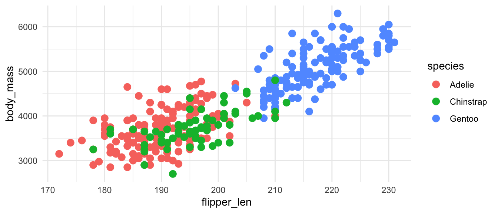
Colors can do much to make your visualizations look better, be easier to interpret, and create consistency. However, if you choose colors poorly, you visualization may become difficult to read and inaccessible to those with visual impairments. Two good resources to begin with are:
For background information on color in Base R, see Achim Zeileis and Paul Murrell, “Coloring in R’s Blind Spot,” March 8, 2023, https://arxiv.org/abs/2303.04918.
There are a number of color palette visualizers that help to test out color choices. These also provide tools to approximate different forms of color blindness.
There are three main types of data types that can be mapped to different color palettes: qualitative, sequential, and diverging. We can show this with the default ggplot2 palettes and two other color palette sets that come with ggplot2, ColorBrewer and Viridis.
Qualitative data, also called discrete and categorical, represents distinct categories that do not have any natural order.
plot_qualitative
plot_qualitative +
scale_color_brewer(palette = "Set1")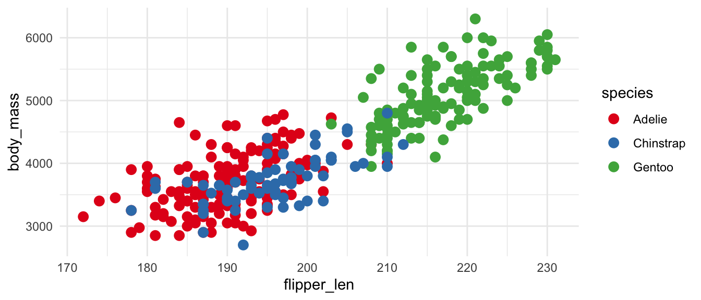
plot_qualitative +
scale_color_viridis_d()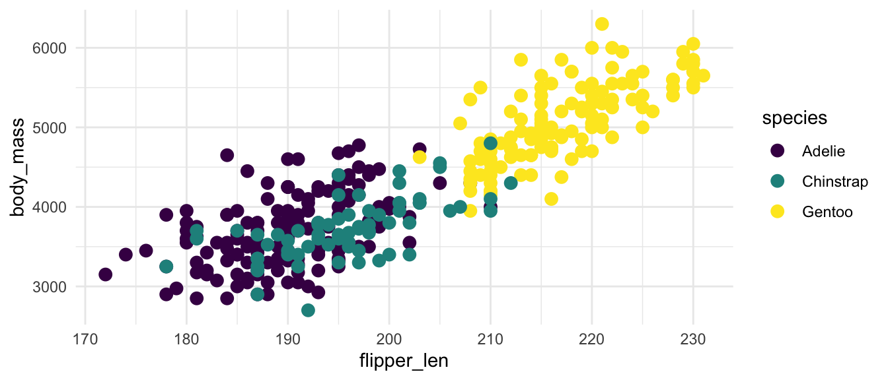
Sequential data represents continuous numeric values.
plot_sequential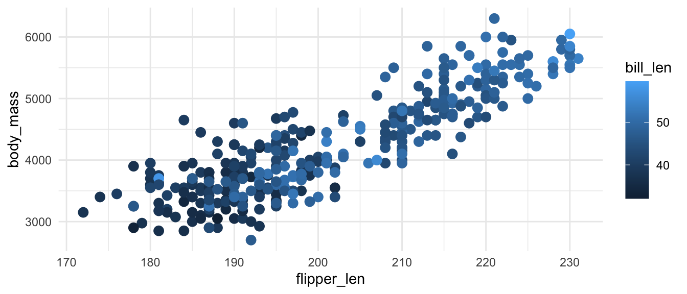
plot_sequential +
scale_color_distiller(palette = "YlOrRd")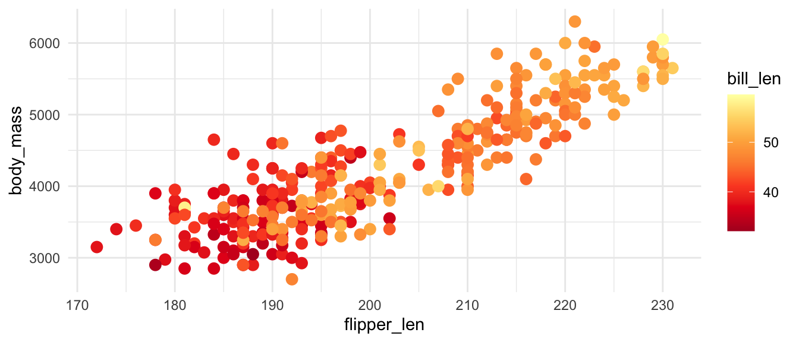
plot_sequential +
scale_color_viridis_c()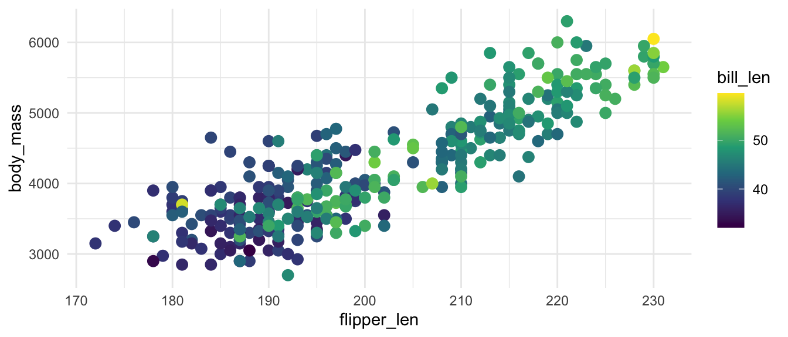
Diverging data can be either continuous sequential data or qualitative. However, it should have a meaningful midpoint and two different extremes. Examples include ranked choices like below or data with a meaningful midpoint at zero. Do not use diverging palettes if your data is not diverging.
ggplot2 does not have default diverging colors nor does Viridis. But ColorBrewer provides a number of choices for diverging data.
plot_diverging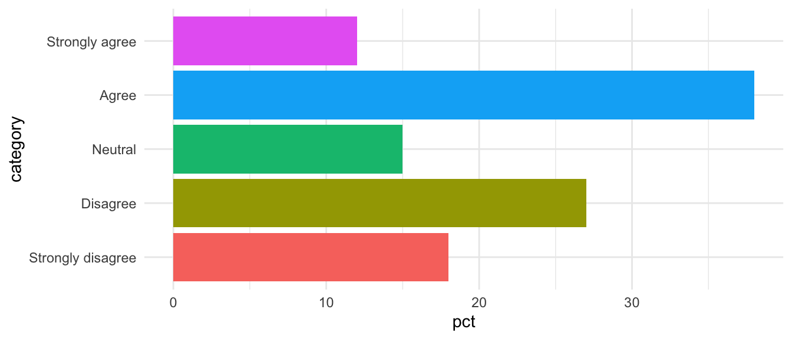
plot_diverging +
scale_fill_brewer(palette = "PRGn")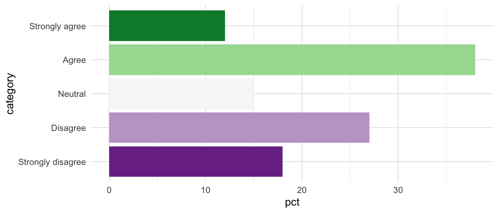
You are not short of choice for color palettes when working in R. You can make your own color palettes or you can turn to the paletteer package, which includes almost 3,000 color palettes.
You can create a manual palette either with either the hundreds of named R colors such as of hex codes such as #861F41 and #E5751F using scale_color/fill_manual() for qualitative data and scale_color/fill_gradient() for sequential data.
There are dozens of color palette packages for R. The paletteer package package collects these and provides a consistent way to access these packages. The package provides color scale functions for continuous or sequential data (scale_color/fill_paletteer_c()) and discrete or qualitative data (scale_color/fill_paletteer_d()), as well as a binned option that turns sequential into qualitative bins (scale_color/fill_paletteer_binned()). The basic structure is scale_color_c("package:palette").
Use the paletteer package website and the included data frames that list the available packages and palettes to help find options. A great resource for this is the R Graph Gallery Palette Finder, which uses paletteer for its data. If you do not find the palette you are looking for, make sure to select the Show more palette button. This interactive selector also provides the R code to use the color scale.
library(paletteer)
plot_qualitative +
scale_color_paletteer_d("nationalparkcolors::BlueRidgePkwy")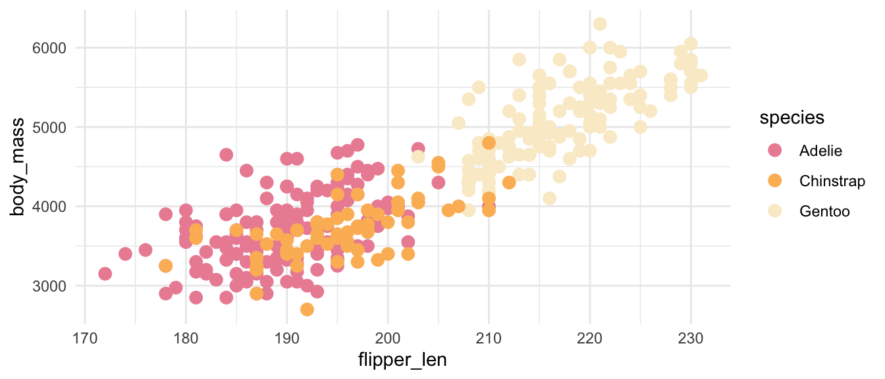
plot_qualitative +
scale_color_paletteer_d("MetBrewer::VanGogh2")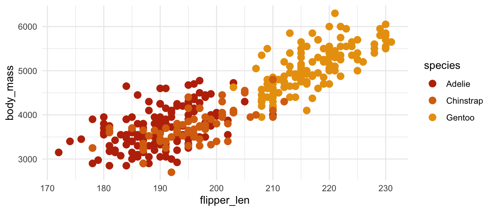
plot_qualitative +
scale_color_paletteer_d("colorblindr::OkabeIto")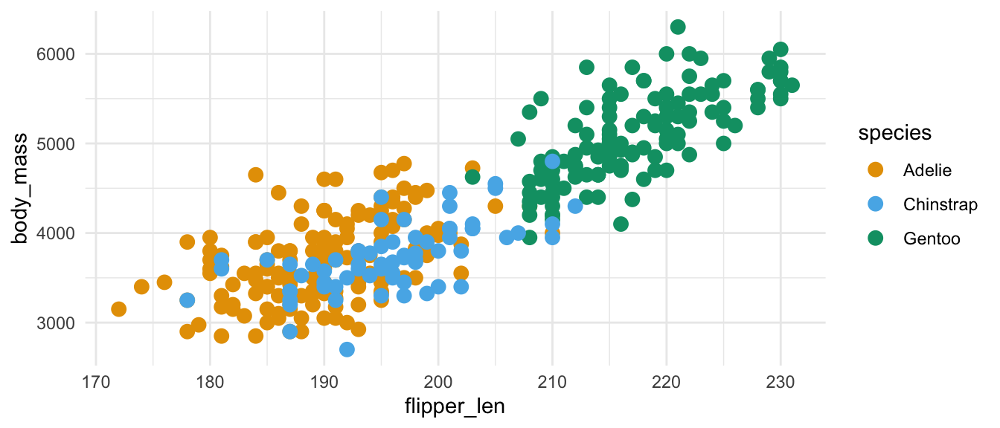
You will notice that some of the above plots are easier to interpret and some of more difficult based on the color palettes.
Making accessible plots is a multi-faceted task. It involves design, understanding the argument made by the visualization, and adding metadata such as alternative text. This resource will focus on the issue of color choice to make plots more legible to more people. The interpretation of visualizations should not rely solely on color, but good color choices can increase accessibility. For a fuller discussion of accessible design, see Nicola Rennie, How to create a more accessible line chart.
There are a couple of packages that provide tools to approximate colorblindness and that provide colorblind friendly palettes. These include:
Here we will use the colorBlindness package to evaluate the palettes we have been using. colorBlindness provides two useful functions for evaluating color palettes.
cvdPlot(): Approximate colorblindness for a given plot.displayAllColors(): Create a matrix of colors that approximates colorblindness for a given palette.Let’s start with the default ggplot2 colors:
Can access the qualitative color scale with scales::hue_pal(). The use of (3) at the end tells how many colors to make.
displayAllColors(scales::hue_pal()(3))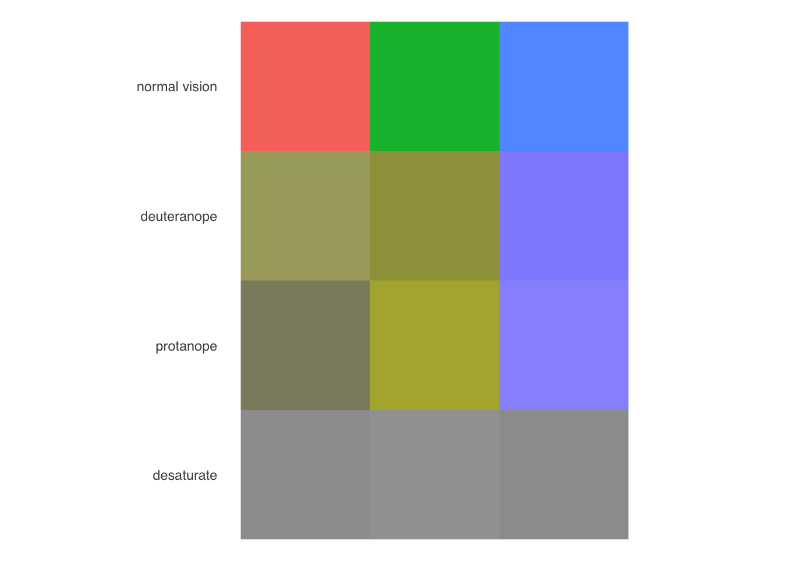
You will notice that the default color palette does not perform very well, especially in grayscale. This is because the default palettes uses colors that all have the same hue. A better default choice is Viridis.
cvdPlot(
plot_qualitative +
guides(color = "none") +
scale_color_viridis_d()
)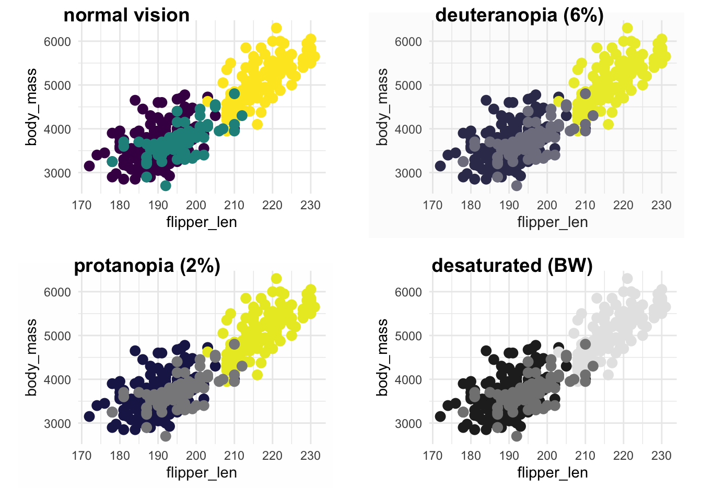
Can access the qualitative color scale with scales::hue_pal(). The use of (3) at the end tells how many colors to make.
displayAllColors(scales::viridis_pal()(3))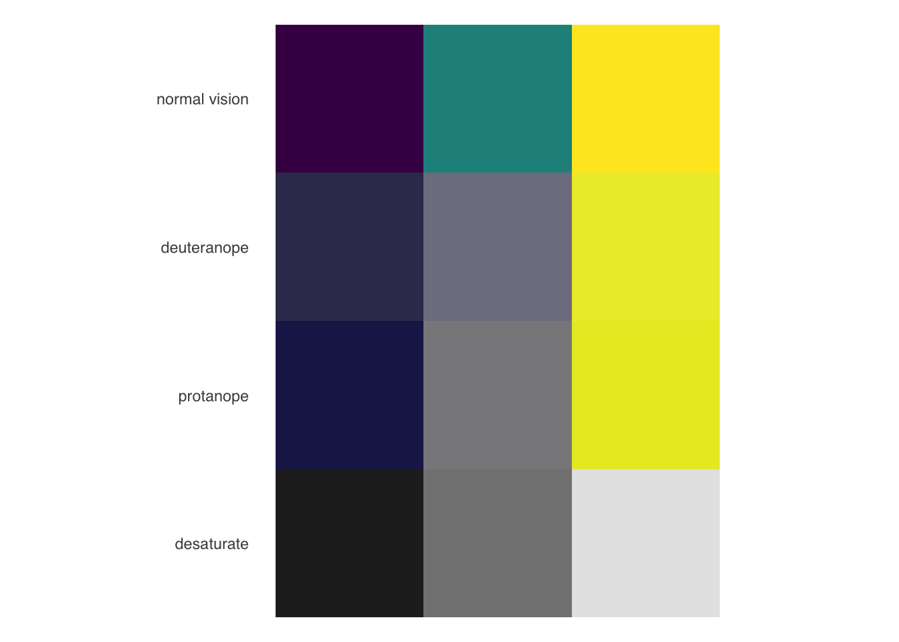
This does not mean that your choices are limited. Many packages provide palettes specifically designed to be colorblind friendly, while you can also use the palettes visualizers of the tools from ColorBlindness to check your choices.
Paletteer includes palettes from colorBlindness, colorblindr, dichromat, as well as many others. Claus Wilke suggests the palette created by Okabe and Ito that is made available through colorblindr.
You can find the palettes from a specific package using dplyr. For instance:
palettes_d_names |>
filter(package == "colorblindr")# A tibble: 2 × 5
package palette length type novelty
<chr> <chr> <int> <chr> <lgl>
1 colorblindr OkabeIto_black 8 qualitative FALSE
2 colorblindr OkabeIto 8 qualitative FALSE plot_qualitative +
scale_color_paletteer_d("ggthemes::Color_Blind")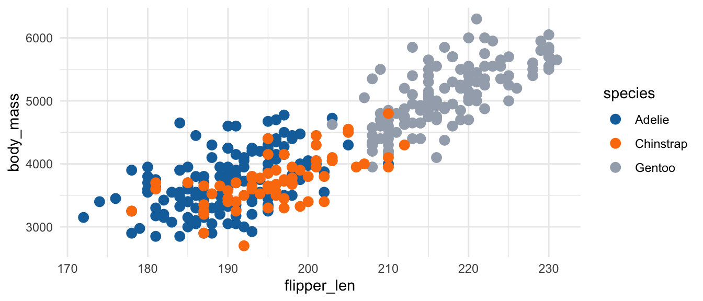
plot_qualitative +
scale_color_paletteer_d("colorBlindness::paletteMartin")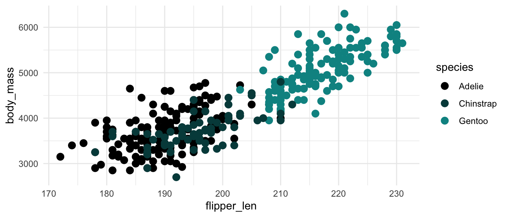